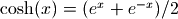
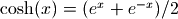
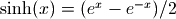

Hyperbolic functions¶
Hyperbolic functions (cosh(), sinh(), tanh(), sech(), csch(), coth())¶
- mpmath.functions.cosh(x, **kwargs)¶
Computes the hyperbolic cosine of
 ,
. Values and limits include:
,
. Values and limits include:>>> from mpmath import * >>> mp.dps = 25 >>> print cosh(0) 1.0 >>> print cosh(1) 1.543080634815243778477906 >>> print cosh(-inf), cosh(+inf) +inf +inf
The hyperbolic cosine is an even, convex function with a global minimum at
 , having a Maclaurin series
that starts:
, having a Maclaurin series
that starts:>>> nprint(chop(taylor(cosh, 0, 5))) [1.0, 0.0, 0.5, 0.0, 4.16667e-2, 0.0]
Generalized to complex numbers, the hyperbolic cosine is equivalent to a cosine with the argument rotated in the imaginary direction, or :
>>> print cosh(2+3j) (-3.724545504915322565473971 + 0.5118225699873846088344638j) >>> print cos(3-2j) (-3.724545504915322565473971 + 0.5118225699873846088344638j)
- mpmath.functions.sinh(x, **kwargs)¶
Computes the hyperbolic sine of
,
. Values and limits include:>>> from mpmath import * >>> mp.dps = 25 >>> print sinh(0) 0.0 >>> print sinh(1) 1.175201193643801456882382 >>> print sinh(-inf), sinh(+inf) -inf +inf
The hyperbolic sine is an odd function, with a Maclaurin series that starts:
>>> nprint(chop(taylor(sinh, 0, 5))) [0.0, 1.0, 0.0, 0.166667, 0.0, 8.33333e-3]
Generalized to complex numbers, the hyperbolic sine is essentially a sine with a rotation applied to the argument; more precisely, :
>>> print sinh(2+3j) (-3.590564589985779952012565 + 0.5309210862485198052670401j) >>> print j*sin(3-2j) (-3.590564589985779952012565 + 0.5309210862485198052670401j)
- mpmath.functions.tanh(x, **kwargs)¶
Computes the hyperbolic tangent of
,
 . Values and limits include:
. Values and limits include:>>> from mpmath import * >>> mp.dps = 25 >>> print tanh(0) 0.0 >>> print tanh(1) 0.7615941559557648881194583 >>> print tanh(-inf), tanh(inf) -1.0 1.0
The hyperbolic tangent is an odd, sigmoidal function, similar to the inverse tangent and error function. Its Maclaurin series is:
>>> nprint(chop(taylor(tanh, 0, 5))) [0.0, 1.0, 0.0, -0.333333, 0.0, 0.133333]
Generalized to complex numbers, the hyperbolic tangent is essentially a tangent with a rotation applied to the argument; more precisely, :
>>> print tanh(2+3j) (0.9653858790221331242784803 - 0.009884375038322493720314034j) >>> print j*tan(3-2j) (0.9653858790221331242784803 - 0.009884375038322493720314034j)
- mpmath.functions.sech(x)¶
- Computes the hyperbolic secant of x, 1/cosh(x)
- mpmath.functions.csch(x)¶
- Computes the hyperbolic cosecant of x, 1/sinh(x)
- mpmath.functions.coth(x)¶
- Computes the hyperbolic cotangent of x, 1/tanh(x)
Inverse hyperbolic functions (acosh(), asinh(), atanh(), asech(), acsch(), acoth())¶
- mpmath.functions.acosh(x, **kwargs)¶
- Computes the inverse hyperbolic cosine of x
- mpmath.functions.asinh(x, **kwargs)¶
- Computes the inverse hyperbolic sine of x
- mpmath.functions.atanh(x, **kwargs)¶
- Computes the inverse hyperbolic tangent of x
- mpmath.functions.asech(x)¶
- Computes the inverse hyperbolic secant of x, acosh(1/x)
- mpmath.functions.acsch(x)¶
- Computes the inverse hyperbolic cosecant of x, asinh(1/x)
- mpmath.functions.acoth(x)¶
- Computes the inverse hyperbolic cotangent of x, atanh(1/x)